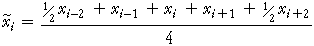

Moving averages
Moving averages are effective for reducing the random fluctuations in a time series. For seasonal data with cycle length n, an n-point moving average, can also be used to remove a seasonal effect, with centred moving averages needed when the cycle length is even. For example, to smooth out the seasonal effect from quarterly data, a 4-point centred moving average is

Tourist arrivals in Fiji